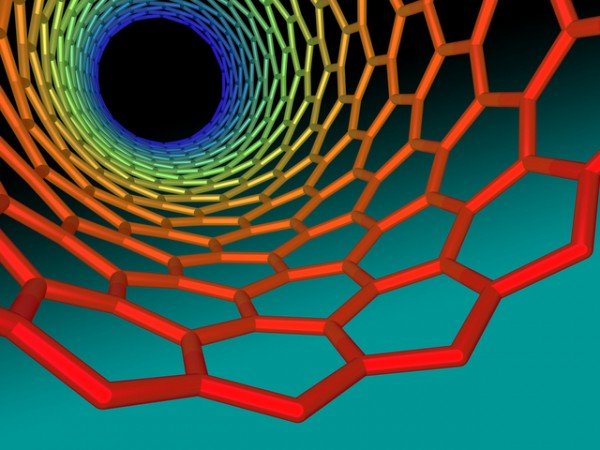
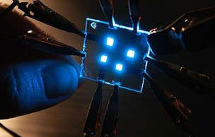

Largamente usado na produção de chips de computador, o silício pode estar com seus dias de "favorito" contados: pesquisadores estão cada vez mais próximos de criar grandes avanços na
eletrônica usando outros materiais – algo essencial, já que a evolução propiciada pelo silício está atingindo seu limite.
Para entender a importância de novos materiais nessa indústria, é preciso lembrar que a capacidade de um chip (que é um dos componentes vitais dos computadores) depende do número de transistores que ele tem; quanto menores eles forem, mais deles caberão no chip.
Há décadas, o silício tem permitido a produção de transistores cada vez menores, mas há um limite chegando; logo, o silício terá de ser substituído para evitar que a evolução dos eletrônicos fique "empacada".
Recentemente, cientistas da IBM conseguiram produzir um chip "híbrido", usando silício e nanotubos de carbono. Este material, segundo os pesquisadores, é duplamente promissor, uma vez que poderá permitir não somente a produção de chips com mais transistores, mas também de equipamentos com velocidade de processamento maior.
"Estes dispositivos [transistores de nanotubos de carbono] superam os feitos de qualquer outro material", destaca Supratik Guha, do Centro de Pesquisa T. J. Watson da IBM (EUA). "Vimos um desempenho cinco ou mais vezes melhor do que o de dispositivos de silício convencionais".
Usando um processo conhecido como auto-arranjo químico, os cientistas fizeram com que os nanotubos de carbono se organizassem seguindo um padrão específico – a precisão é fundamental para que os chips funcionem. Para aperfeiçoar o procedimento, será necessário usar amostras mais puras de carbono, já que as formas menos puras não conduzem eletricidade tão bem – o que prejudicaria o desempenho dos chips.
Além dos nanotubos de carbono, o grafeno (folha de grafite com um átomo de espessura) também está sendo explorado como possível sucessor do silício. Pesquisadores também buscam aprimorar os chamados transistores de efeito de campo para substituir os convencionais.
Depois das longas brigas com a Apple por conta de patentes referentes a designs de smartphones e tablets, a Samsung está em uma nova guerra judicial. Agora, a rival é a também coreana LG. As duas companhias disputam, na Justiça, o direito de produzirem telas com a tecnologia OLED.
O caso é longo e começou no início do ano, quando 11 ex-funcionários da Samsung foram presos acusados de copiarem detalhes das televisões de AMOLED da empresa e passarem para a LG. Pouco depois, em setembro, foi a LG quem processou a Samsung, alegando que a rival estaria violando sete patentes dela com a criação de suas telas com AMOLED, utilizadas no Galaxy S3, Galaxy Tab 7.7 e Galaxy Note.
Para contra-atacar, em novembro a empresa dos Galaxy emitiu um documento contra a LG tentando convencer a corte de que é a concorrente que está quebrando as regras das patentes. Segundo a agência de notícias Yonhap, a Samsung alega que as patentes da LG "não são inovadoras" e que por isso devem ser invalidadas, inocentando-se assim de qualquer acusação.
Mais finas, brilhantes e leves do que as telas de LCD tradicional, as telas de OLED estão em alta no momento. Por isso, a expectativa é de que as duas companhias sigam lutando até o fim pelo direito de produzirem produtos com a tecnologia.